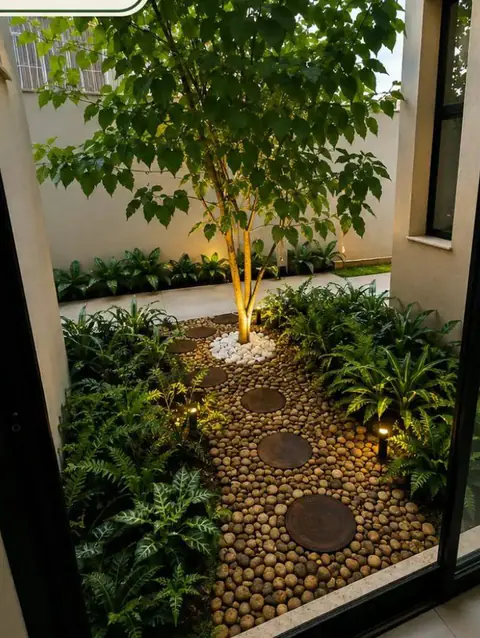

Onde atendemos
Paisagismo em São Paulo e região.
Projeto, execução com equipe própria e manutenção contínua para residências, condomínios e empresas em São Paulo, no Vale do Paraíba e na Grande São Paulo.

O que muda no paisagismo aqui
São Paulo tem uma combinação específica: chuva concentrada no verão, inverno seco e ameno, e uma quantidade grande de terreno em área urbana adensada — o que significa muro alto, sombra de vizinho e solo que sobrou de obra.
Na prática, três coisas pesam mais nos projetos da região:
- Sombra. Muro e prédio vizinho reduzem a insolação real muito além do que se imagina olhando o terreno ao meio-dia. Medir a luz por período do dia é o que evita escolher espécie de sol pleno para uma faixa que recebe duas horas de sol.
- Drenagem. Com chuva concentrada, ponto baixo sem escoamento vira poça recorrente — e raiz não sobrevive a encharcamento repetido.
- Solo de obra. Terreno de construção recente costuma ter solo compactado e entulho enterrado. Sem descompactação e correção, qualquer plantio é desperdício.
Para quem trabalhamos na região
- Residências — jardim de entrada, área de piscina, quintal e varanda, com manutenção que cabe na rotina.
- Condomínios — áreas comuns, portaria e praças, com contrato mensal, relatório de visita e previsibilidade de custo.
- Empresas — fachada, recepção e áreas de convivência.
- Chácaras e sítios — grandes áreas, arborização, pomar ornamental e recuperação de gramado.
Apartamento e varanda
É onde o resultado aparece mais rápido, porque o espaço está sempre no campo de visão. Para varanda, hall e ambiente interno trabalhamos com jardins verticais e árvores adaptadas em vaso, kokedamas e terrários.
Cidades atendidas
Atendemos com equipe deslocada para a obra nas seguintes cidades:
- São Paulo
- São José dos Campos
- Jacareí
- Caçapava
- Taubaté
- Guarulhos
- Santana de Parnaíba
- Barueri
- Osasco
Não achou a sua cidade? Para obras maiores avaliamos deslocamento para municípios vizinhos. Mande a localização no WhatsApp que confirmamos na hora.
Quer um orçamento em São Paulo?
Mande uma foto do seu jardim, quintal, varanda ou área comum. Em poucos minutos te dizemos o que dá para fazer — e quanto custa.
Quero meu orçamento grátisServiços disponíveis na região
O que fazemos em São Paulo.
Projeto de Paisagismo
Projeto exclusivo para o seu espaço: conceito, distribuição de canteiros, lista de espécies, iluminação e acabamentos.
Ver mais →Execução & Plantio
Preparo e correção de solo, drenagem, irrigação, plantio e acabamento. Executamos o que projetamos — sem terceirizar a mão de obra.
Ver mais →Manutenção de Jardins
Visitas programadas com poda técnica, adubação, controle fitossanitário, replantio pontual e limpeza. Contrato mensal ou avulso.
Ver mais →Jardins Verticais
Verde onde não existe chão. Painéis naturais ou preservados para fachadas, muros, halls e ambientes internos.
Ver mais →Grama & Gramados
Formação, troca e recuperação de gramado com nivelamento e preparo de base — para o tapete ficar uniforme e durar.
Ver mais →Vasos, Kokedamas & Terrários
Árvores adaptadas em vaso — jabuticabeira, oliveira, caliandra, hibisco trançado — além de kokedamas e terrários sob encomenda.
Ver mais →Dúvidas frequentes